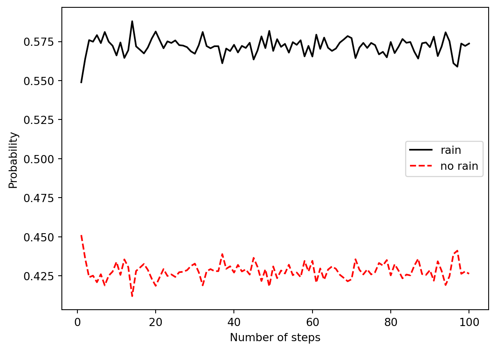

import numpy as np
import matplotlib.pyplot as plt
def simulate_rain(P, n):
"""
Simulate the rain problem
input:
P: numpy 2d array of shape (2,2), the transition probability matrix
n: int, number of steps to simulate
output:
state: int, 0 or 1, representing the final state.
"""
state = np.random.randint(2) # randomly initialize a state
for i in range(n):
if state == 0:
if np.random.random() < P[0,0]:
state = 0
else:
state = 1
else:
if np.random.random() < P[1,0]:
state = 0
else:
state = 1
return state
alpha = 0.7
beta = 0.4
sample_size = 10000 # For each fixed number of steps, use 10000 simulations to determine the probabilities
n_max = 100 # Consider 1, 2, 3, up until 100 steps
P = np.array([[alpha, 1-alpha], [beta, 1-beta]])
p = np.zeros((n_max,2)) # Store all the probabilities corresponding to all numbers of steps
for n in range(1, n_max+1):
for i in range(sample_size):
if simulate_rain(P, n) == 0:
p[n-1, 0] += 1
else:
p[n-1, 1] += 1
p[n-1,:] /= p[n-1,:].sum()4 Limiting Probabilities for Markov Chains
4.1 Limiting Probabilities
In Example 4 in Lecture 2, where we considered a two-state Markov chain with one-step transition probability given by \[ P = \begin{bmatrix} 0.7 & 0.3 \\ 0.4 & 0.6 \end{bmatrix}, \] we calculated \(P^{(4)}\), which is \[ P^{(4)} = \begin{bmatrix} 0.5749 & 0.4251 \\ 0.5668 & 0.4332 \end{bmatrix}. \] From this, it follows that \(P^{(8)}=P^{(4)}\cdot P^{(4)}\) is given (to three significant places) by \[ P^{(8)} = \begin{bmatrix} 0.572 & 0.428 \\ 0.570 & 0.430 \end{bmatrix} \]
Note that the matrix \(P^{(8)}\) is almost identical to the matrix \(P^{(4)}\), and secondly, that each of the rows of \(P^{(8)}\) has almost identical entries. In fact it seems that \(P^n_{ij}\) is converging to some value (as \(n\rightarrow\infty\)) which is the same for all \(i\). In other words, there seems to exist a limiting probability that the process will be in state \(j\) after a large number of transitions, and this value is independent of the initial state.
To make the preceding heuristics more precise, two additional properties of the states of a Markov chain need to be considered. State \(i\) is said to have period \(d\) if \(P^n_{ii}= 0\) whenever \(n\) is not divisible by \(d\), and \(d\) is the largest integer with this property. For instance, starting in \(i\), it may be possible for the process to enter state \(i\) only at the times \(2, 4, 6, 8, \cdots\), in which case state \(i\) has period 2. A state with period 1 is said to be aperiodic. It can be shown that periodicity is a class property. That is, if state \(i\) has period \(d\), and states \(i\) and \(j\) communicate, then state \(j\) also has period \(d\).
If state \(i\) is recurrent, then it is said to be positive recurrent if, starting in \(i\), the expected time until the process returns to state \(i\) is finite. It can be shown that positive recurrence is a class property. While there exist recurrent states that are not positive recurrent (such states are called null recurrent), it can be shown that in a finite-state Markov chain all recurrent states are positive recurrent. Positive recurrent, aperiodic states are called ergodic.
We are now ready for the following important theorem which we state without proof.
Theorem 4.1 For an irreducible ergodic Markov chain \(\lim_{n\rightarrow\infty} P^n_{ij}\) exists and is independent of \(i\). Furthermore, letting \[ \pi_j = \lim_{n\rightarrow\infty}P^n_{ij}, \quad j\ge 0 \] then \(\pi_j\) is the unique nonnegative solution of \[ \pi_j = \sum_{i=0}^{\infty}\pi_i P_{ij},\quad j\ge 0, \] \[ \sum_{j=0}^\infty \pi_j = 1 \tag{4.1}\]
Remark 4.1.
Given that \(\pi_j = \lim_{n\rightarrow\infty}P^n_{ij}\) exists and is independent of the initial state \(i\), it is not difficult to (heuristically) see that the \(\pi\)’s must satisfy Equation 4.1. Let us derive an expression for \(P\{X_{n+1} = j\}\) by conditioning on the state at time \(n\). That is, \[ P\{X_{n+1}=j\} = \sum_{i=0}^\infty P\{X_{n+1}=j | X_n = i\} P\{X_{n}=i\} = \sum_{i=0}^\infty P_{ij}P\{X_{n} = i\} \] Letting \(n\rightarrow\infty\), and assuming that we can bring the limit inside the summation, leads to \[ \pi_j = \sum_{i=0}^\infty P_{ij}\pi_i \]
It can be shown that \(\pi_j\) , the limiting probability that the process will be in state \(j\) at time \(n\), also equals the long-run proportion of time that the process will be in state \(j\) .
If the Markov chain is irreducible, then there will be a solution to \[ \pi_j = \sum_{i}\pi_i P_{ij},\quad j\ge 0, \] \[ \sum_{j} \pi_j = 1 \] if and only if the Markov chain is positive recurrent. If a solution exists then it will be unique, and \(\pi_j\) will equal the long run proportion of time that the Markov chain is in state \(j\) . If the chain is aperiodic, then \(\pi_j\) is also the limiting probability that the chain is in state \(j\).
Example 4.1 Consider Example 1 in Lecture 2, in which we assume that if it rains today, then it will rain tomorrow with probability \(\alpha\); and if it does not rain today, then it will rain tomorrow with probability \(\beta\). If we say that the state is \(0\) when it rains and \(1\) when it does not rain, then by Equation 4.1 the limiting probabilities \(\pi_0\) and \(\pi_1\) are given by \[ \begin{aligned} \pi_0 &= \alpha\pi_0 + \beta\pi_1 \\ \pi_1 &= (1-\alpha)\pi_0 + (1-\beta)\pi_1 \\ \pi_0 + \pi_1 &= 1 \end{aligned} \] which yields that \[ \pi_0 = \frac{\beta}{1+\beta-\alpha}, \quad \pi_1 = \frac{1-\alpha}{1+\beta-\alpha} \] For example if \(\alpha = 0.7\) and \(\beta = 0.4\), then the limiting probability of rain is \(\pi_0 = \frac{4}{7} = 0.571\).
fig = plt.figure()
plt.plot(np.arange(1, n_max+1), p[:, 0], 'k-', label='rain')
plt.plot(np.arange(1, n_max+1), p[:, 1], 'r--', label='no rain')
plt.xlabel('Number of steps')
plt.ylabel('Probability')
plt.legend()
plt.show(fig)
Example 4.2 Consider a three-state Markov chain having a transition probability matrix \[ P = \begin{bmatrix} 0.5 & 0.4 & 0.1 \\ 0.3 & 0.4 & 0.3 \\ 0.2 & 0.3 & 0.5 \end{bmatrix} \] In the long run, what proportion of time is the process in each of the three states?
Solution 4.1. The limiting probabilities \(\pi_i, i = 0, 1, 2\), are obtained by solving the set of equations in Equation 4.1. In this case these equations are \[ \begin{aligned} \pi_0 &= 0.5\pi_0 + 0.3\pi_1 + 0.2\pi_2 \\ \pi_1 &= 0.4\pi_0 + 0.4\pi_1 + 0.4\pi_2 \\ \pi_2 &= 0.1\pi_0 + 0.3\pi_1 + 0.5\pi_2 \\ \pi_0 + \pi_1 + \pi_2 &= 1 \end{aligned} \] Solving yields \[ \pi_0 = \frac{21}{62}, \quad \pi_1 = \frac{23}{62}, \quad \pi_2 = \frac{18}{62} \]
Example 4.3 (The Hardy–Weinberg Law and a Markov Chain in Genetics) Consider a large population of individuals, each of whom possesses a particular pair of genes, of which each individual gene is classified as being of type \(A\) or type \(a\). Assume that the proportions of individuals whose gene pairs are \(AA\), \(aa\), or \(Aa\) are, respectively, \(p_0\), \(q_0\), and \(r_0\) (\(p_0 + q_0 + r_0 = 1\)). When two individuals mate, each contributes one of his or her genes, chosen at random, to the resultant offspring. Assuming that the mating occurs at random, in that each individual is equally likely to mate with any other individual, we are interested in determining the proportions of individuals in the next generation whose genes are \(AA\), \(aa\), or \(Aa\). Calling these proportions \(p\), \(q\), and \(r\), they are easily obtained by focusing attention on an individual of the next generation and then determining the probabilities for the gene pair of that individual.
To begin, note that randomly choosing a parent and then randomly choosing one of its genes is equivalent to just randomly choosing a gene from the total gene population. By conditioning on the gene pair of the parent, we see that a randomly chosen gene will be type \(A\) with probability \[ P\{A\} = P\{A|AA\}p_0 + P\{A|aa\}q_0 + P\{A|Aa\}r_0 = p_0+r_0/2 \] Similarly, it will be type a with probability \[ P\{a\} = q_0 + r_0/2 \] Thus, under random mating a randomly chosen member of the next generation will be type \(AA\) with probability \(p\), where \[ p = P\{A\}P\{A\} = (p_0+r_0/2)^2 \] Similarly, the randomly chosen member will be type aa with probability \[ q = P\{a\}P\{a\} = (q_0+r_0/2)^2 \] and will be type \(Aa\) with probability \[ r = 2P\{A\}P\{a\} = 2(p_0+r_0/2)(q_0+r_0/2) \] Since each member of the next generation will independently be of each of the three gene types with probabilities \(p, q, r\), it follows that the percentages of the members of the next generation that are of type \(AA, aa\), or \(Aa\) are respectively \(p\), \(q\), and \(r\).
If we now consider the total gene pool of this next generation, then \(p + r/2\), the fraction of its genes that are \(A\), will be unchanged from the previous generation. This follows either by arguing that the total gene pool has not changed from generation to generation or by the following simple algebra: \[ \begin{aligned} p+r/2 &= (p_0+r_0/2)^2 +(p_0+r_0/2)(q_0+r_0/2) \\ &= (p_0+r_0/2)[p_0+r_0/2+q_0+r_0/2] \\ &= p_0 + r_0/2\quad \text{since } p_0+r_0+q_0 = 1 \\ &= P\{A\} \end{aligned} \tag{4.2}\] Thus, the fractions of the gene pool that are \(A\) and \(a\) are the same as in the initial generation. From this it follows that, under random mating, in all successive generations after the initial one the percentages of the population having gene pairs \(AA\), \(aa\), and \(Aa\) will remain fixed at the values \(p\), \(q\), and \(r\). This is known as the Hardy–Weinberg law.
Suppose now that the gene pair population has stabilized in the percentages \(p\), \(q\), \(r\), and let us follow the genetic history of a single individual and her descendants. (For simplicity, assume that each individual has exactly one offspring.) So, for a given individual, let \(X_n\) denote the genetic state of her descendant in the \(n\)th generation. The transition probability matrix of this Markov chain, namely, \[ \begin{array}{c c} & \begin{array}{c c c c c c} AA & & aa & & Aa &\\ \end{array} \\ \begin{array}{c c c}AA \\ aa \\Aa \end{array} & \left[ \begin{array}{c c c} p+\frac{r}{2} & 0 & q+\frac{r}{2} \\ 0 & q+\frac{r}{2} & p+\frac{r}{2} \\ \frac{p}{2}+\frac{r}{4} & \frac{q}{2}+\frac{r}{4} & \frac{p}{2}+\frac{q}{2} + \frac{r}{2} \end{array} \right] \end{array} \] is easily verified by conditioning on the state of the randomly chosen mate. It is quite intuitive (why?) that the limiting probabilities for this Markov chain (which also equal the fractions of the individual’s descendants that are in each of the three genetic states) should just be \(p\), \(q\), and \(r\). To verify this we must show that they satisfy Equation 4.1. Because one of the equations in Equation 4.1 is redundant, it suffices to show that \[ \begin{aligned} p &= p\left(p+\frac{r}{2}\right) + r\left(\frac{p}{2}+\frac{r}{4}\right) = \left(p+\frac{r}{2}\right)^2 \\ q &= q\left(q+\frac{r}{2}\right) + r\left(\frac{q}{2}+\frac{r}{4}\right) = \left(q+\frac{r}{2}\right)^2 \\ p+q+r &= 1 \end{aligned} \] But this follows from Equation 4.2, and thus the result is established.
The following result is quite useful.
Proposition 4.1 Let \(\{X_n, n \ge 1\}\) be an irreducible Markov chain with stationary probabilities \(\pi_j, j \ge 0\), and let \(r\) be a bounded function on the state space. Then, with probability 1, \[ \lim_{N\rightarrow\infty} \frac{\sum_{n=1}^N r(X_n)}{N} = \sum_{j=0}^\infty r(j)\pi_j \]
Proof. If we let \(a_j(N)\) be the amount of time the Markov chain spends in state \(j\) during time periods \(1, \dots, N\), then \[ \sum_{n=1}^N r(X_n) = \sum_{j=0}^{\infty} a_j(N)r(j) \] Since \(a_j(N)/N \rightarrow \pi_j\) the result follows from the preceding upon dividing by \(N\) and then letting \(N\rightarrow\infty\).
If we suppose that we earn a reward \(r(j)\) whenever the chain is in state \(j\), then Proposition 24.1 states that our average reward per unit time is \(\sum_j r(j)\pi_j\).
Example 4.4 For the four state Bonus Malus automobile insurance system specified in Lecture 2, find the average annual premium paid by a policyholder whose yearly number of claims is a Poisson random variable with mean \(1/2\).
Solution 4.2. With \(a_k=e^{-1/2}\frac{(1/2)^k}{k!}\), we have \[ a_0 = 0.6065, \quad a_1=0.3033, \quad a_2=0.0758 \] Therefore, the Markov chain of successive states has the following transition probability matrix. \[ \begin{bmatrix} 0.6065 & 0.3033 & 0.0758 & 0.0144 \\ 0.6065 & 0.0000 & 0.3033 & 0.0902 \\ 0.0000 & 0.6065 & 0.0000 & 0.3935 \\ 0.0000 & 0.0000 & 0.6065 & 0.3935 \end{bmatrix} \] The stationary probabilities are given as the solution of \[ \begin{aligned} \pi_1 &= 0.6065\pi_1 + 0.6065\pi_2 \\ \pi_2 &= 0.3033\pi_1 + 0.6065\pi_3 \\ \pi_3 &= 0.0758\pi_1 + 0.3033\pi_2 + 0.6065\pi_4 \\ \pi_1+\pi_2+\pi_3+\pi_4 &= 1 \end{aligned} \] Rewriting the first three of these equations gives: \[ \begin{aligned} \pi_2 &= \frac{1-0.6065}{0.6065}\pi_1, \\ \pi_3 &= \frac{\pi_2-0.3033\pi_1}{0.6065} \\ \pi_4 &= \frac{\pi_3-0.0758\pi_1-0.3033\pi_2}{0.6065} \end{aligned} \] or \[ \begin{aligned} \pi_2 &= 0.6488\pi_1, \\ \pi_3 &= 0.5697\pi_1 \\ \pi_4 &= 0.4900\pi_1 \end{aligned} \] Using that \(\sum_{i=1}^4\pi=1\) gives the solution (rounded to four decimal places) \[ \pi_1 = 0.3692, \quad \pi_2 = 0.2395, \quad \pi_3 = 0.2103, \quad \pi_4 = 0.1809 \] Therefore, the average annual premium paid is \[ 200\pi_1 +250\pi_2 +400\pi_3 +600\pi_4 = 326.375 \]